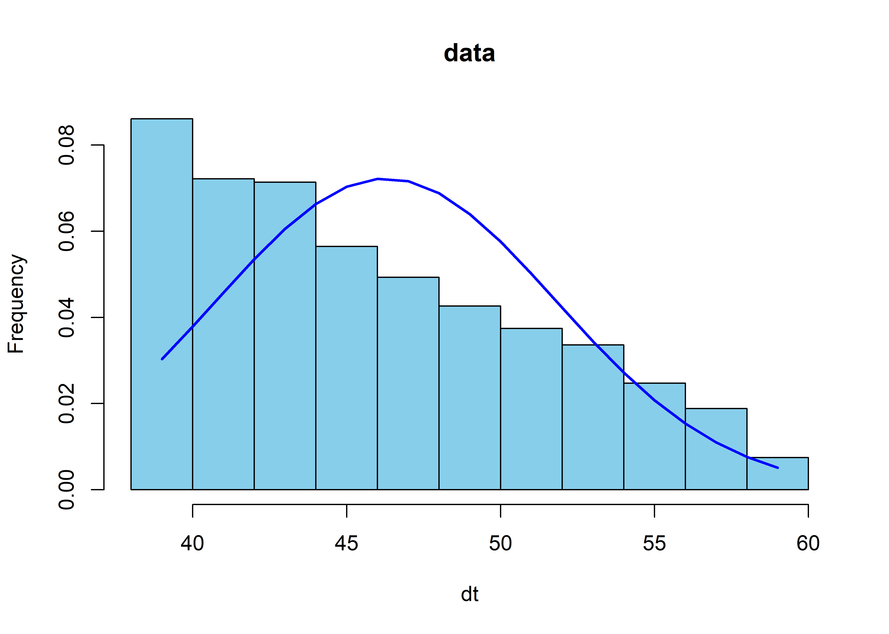
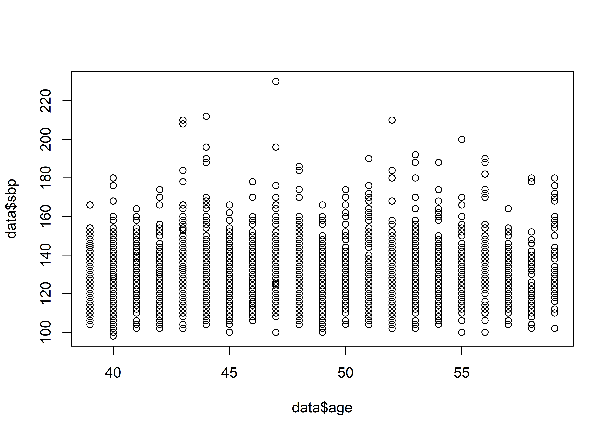
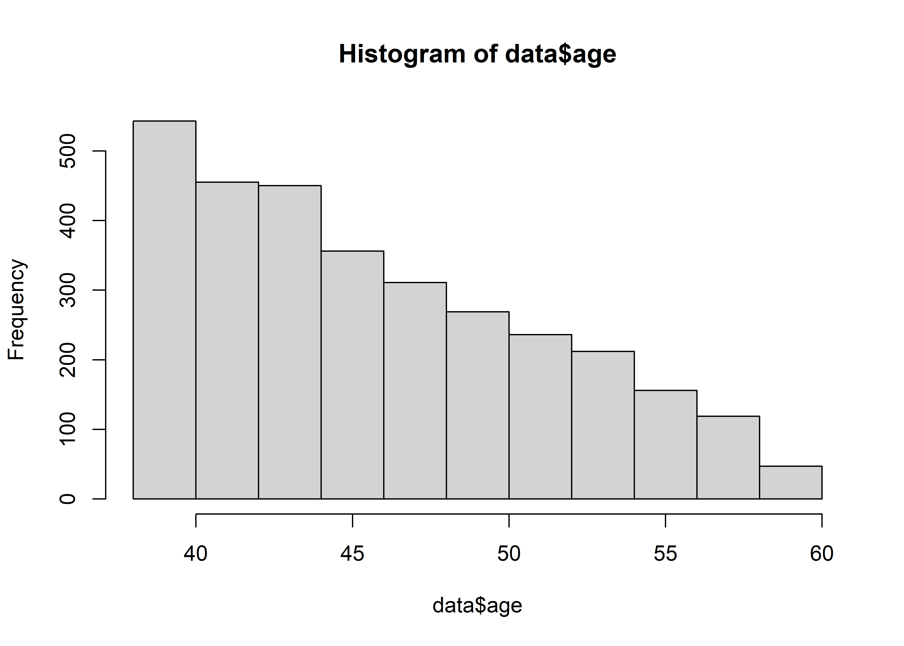
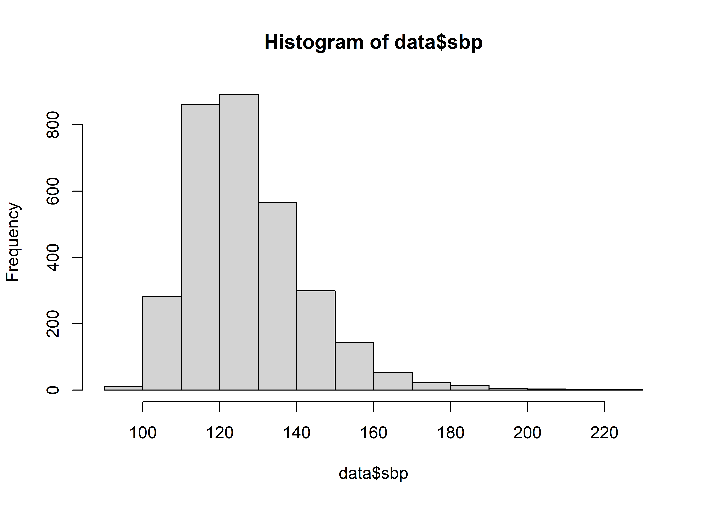
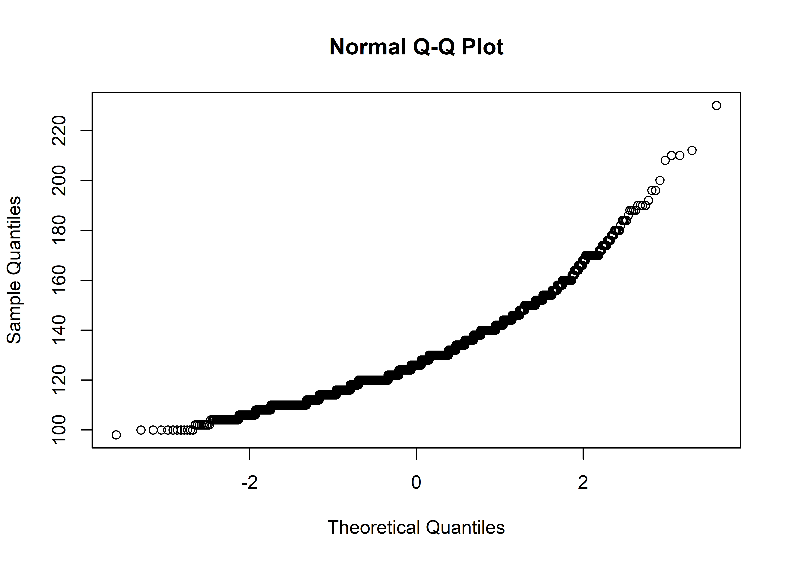
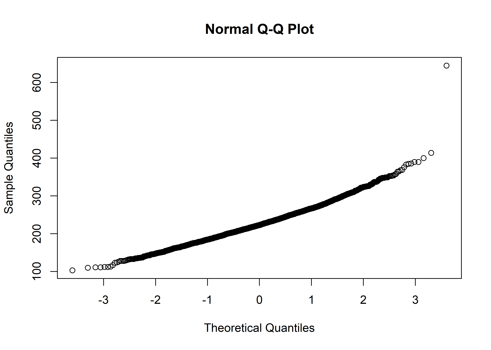
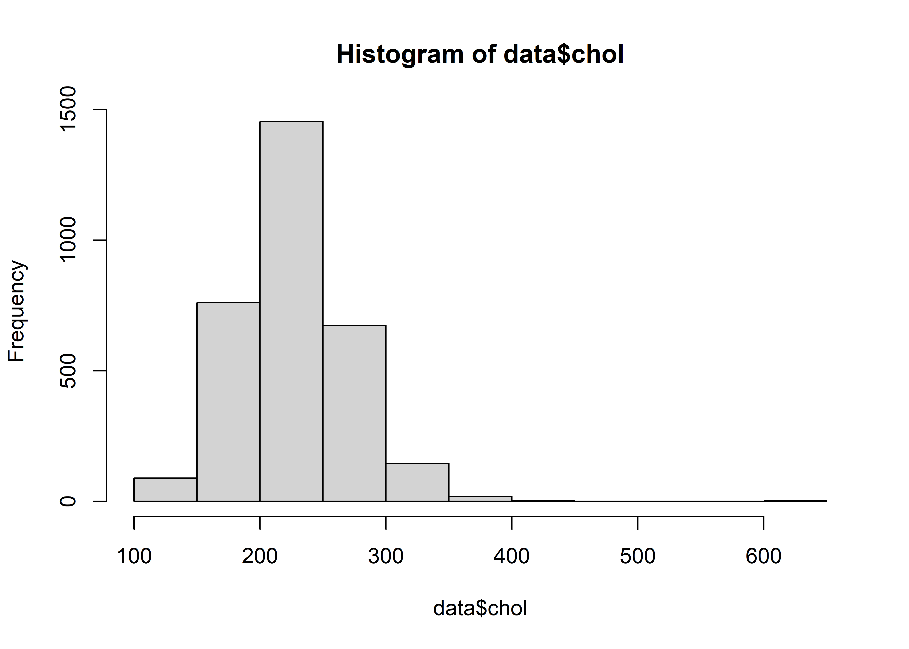
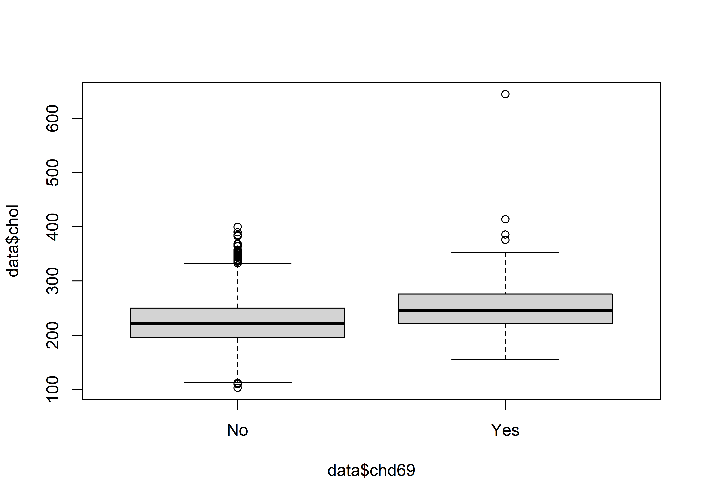

# install.packages("moments")
library(moments)
# skewness
skewness(data$age) # Interpretation: slight right ward skew#> [1] 0.5263655kurtosis(data$age) # Interpretation: it is higher than 3 (this indicates heavier tails)#> [1] 2.227403The choice of a test statistic depends on the following:
Hypothesis that you are testing
Measurement scale of dependent and independent variables
Normality of distribution of numeric variable
Degree of freedom
Independent data or paired data

Chi-square test: This test statistic is used to determine the association between categorical dependent and categorical independent variables. Multiple chi-square tests are used if the degree of freedom is 1, 2, or more.
Pearson Chi-Square test: It is used if the degree of freedom is 1 or more, variables are independent (not paired), and the expected cell count is >5.
Chi-square test with Yates correction: It is used if the degree of freedom is 1, variables are independent (not paired), and the total sample size is <50.
Fischer’s exact test: It is used if the degree of freedom is 1, variables are independent (not paired), and the expected cell count is <5.
McNemar test: It is used if the degree of freedom is 1, and variables are paired (not independent).
Correlation: This test statistic is used to determine the association between two numerical dependent and independent variables. There are two correlation coefficients calculated for two different conditions.
Pearson’s correlation: This test statistic is used if both dependent and independent variables are normally distributed.
Spearman correlation: This test statistic is used if dependent or independent variables are non-normally distributed.
One sample Z-test: This test is used to compare th the mean from the sample with the hyppthesized value.
T-test or Z-test: These test statistics are used to compare normally distributed means across two categories. The T-test is used if the population variance is unknown or the sample size is small. Otherwise, the Z test can be used.
Paired T-test: These test statistic is used to compare normally distributed means between pairs.
Mann-Whitney U Test : It is non-parametric alternative of T-test.
Wilcoxon Rank-Sum Test: It is non-parametric alternative of paired T-test.
ANOVA (Analysis of Variance): Used when comparing means across more than two groups. One-way ANOVA is used for one independent variable, while two-way ANOVA involves two independent variables.
Kruskal-Wallis Test: This is a non-parametric alternative to ANOVA, used when comparing non-normally distributed mean between three or more independent categories.
Repeated measure ANOVA: This is used if the normally distributed numeric variables are compared between three or more measurements (repeated measure data).
Fried Mann test: This is used if the non-normally distributed numeric variables are compared between three or more repeated measurements.
Always ensure that the assumptions of the chosen test are met for your data. If you are unsure about which test statistic to use, consulting with a statistician or using statistical software that guides you based on your data and research question is a good practice.
Before having some practical insights on using R for basic statistical analysis, Let’s explore the dataset that we will be using. In this section, we will use the WCGS (Western Collaborative Group Study data) dataset to demonstrate the different basic statistical analysis. The variable names and their description are as follows:
id Subject ID:
age Age: age in years
height Height: height in inches
weight Weight: weight in pounds
sbp Systolic blood pressure: mm Hg
dbp Diastolic blood pressure: mm Hg
chol Cholesterol: mg/100 ml
behpat Behavior pattern:
ncigs Smoking: Cigarettes/day
dibpat Dichotomous behavior pattern: 0 = Type B; 1 = Type A
chd69 Coronary heart disease event: 0 = none; 1 = yes
typechd to be done
time169 Observation (follow up) time: Days
arcus Corneal arcus: 0 = none; 1 = yes
Nearly every test in this chapter comes in two ways: a parametric version (assumes normally distributed data, usually more powerful when its assumptions hold) and a non-parametric version (works on ranks instead of raw values, valid under much weaker assumptions, but somewhat less powerful when the data really are normal). Before choosing between them, it helps to check the two assumptions that drive that choice: normality and equal variance (homogeneity of variance).
We can calculate skewness and kurtosis using moments package. Lets calculate skewness and kurtosis in our dataset.
Function used: skewness () and kurtosis()
# install.packages("moments")
library(moments)
# skewness
skewness(data$age) # Interpretation: slight right ward skew#> [1] 0.5263655kurtosis(data$age) # Interpretation: it is higher than 3 (this indicates heavier tails)#> [1] 2.227403
Normality is an important assumption in many statistical tests, such as t-tests, ANOVA, linear regression, and parametric tests. Ensuring that data is normally distributed helps validate the results of these tests and ensures the reliability of statistical inferences. In the figure below, only middle one is normally distributed whereas other two are not.

Normality testing can be conducted using several methods:
The Shapiro-Wilk test is a widely used statistical test for normality. It evaluates the null hypothesis that a sample comes from a normally distributed population. It is particularly effective for small to moderate sample sizes (typically < 50).
Shapiro-Wilk test (shapiro.test()) tests \(H_0:\) the data are drawn from a normal distribution, vs. \(H_1:\) they are not. The test statistic, W, compares the observed data to what would be expected under normality. A p-value < 0.05 often leads to rejecting the null hypothesis, indicating non-normality.
dt <- rnorm(1000)
# Shapiro wilk test (works for sample <5000)
shapiro.test(dt)#>
#> Shapiro-Wilk normality test
#>
#> data: dt
#> W = 0.99767, p-value = 0.1711shapiro.test(data$height) # roughly symmetric, bell-shaped variable#>
#> Shapiro-Wilk normality test
#>
#> data: data$height
#> W = 0.98357, p-value < 2.2e-16shapiro.test(data$ncigs) # heavily right-skewed (many non-smokers -> many zeros)#>
#> Shapiro-Wilk normality test
#>
#> data: data$ncigs
#> W = 0.78164, p-value < 2.2e-16Shapiro-Wilk (like most goodness-of-fit tests) becomes extremely sensitive with large samples in a cohort of 3154 like wcgs, even trivial, practically unimportant deviations from normality will produce a significant (p < 0.05) result. For large \(n\), weigh the Q-Q plot and histogram more heavily than the p-value alone, and rely on the Central Limit Theorem (sample means are approximately normal for large \(n\) even when the raw data are not) when deciding whether a t-test/ANOVA is still reasonable.
Interpretation: The test statistic (W) is 0.99786, and the p-value is 0.7844. With a high p-value, there is no significant evidence to reject the null hypothesis, suggesting that the data is reasonably consistent with a normal distribution.
The Kolmogorov-Smirnov test is a non-parametric test used to compare a sample distribution to a reference distribution (e.g., normal distribution). It measures the maximum distance between the empirical distribution function of the sample and the cumulative distribution function of the reference distribution. While it can be used for normality testing, it is less powerful than the Shapiro-Wilk test for this purpose, especially for small samples.
# KS test
ks.test(dt,"pnorm", exact = T)#>
#> Exact one-sample Kolmogorov-Smirnov test
#>
#> data: dt
#> D = 0.019345, p-value = 0.8411
#> alternative hypothesis: two-sidedInterpretation: The test statistic (D) is 0.017067, and the p-value is 0.9982. With a high p-value, there is no significant evidence to reject the null hypothesis, indicating that the data does not significantly differ from the assumed distribution in a two-sided test.
A Q-Q plot is a graphical tool to assess whether a dataset follows a particular distribution, such as the normal distribution. It plots the quantiles of the sample data against the quantiles of the theoretical distribution. If the points fall approximately along a straight line, the data is likely normally distributed. Deviations from the line (e.g., curves or outliers) suggest departures from normality.
# QQ plot
qqnorm(data$age)
Interpretation: In the first chart, the points do not deviate significantly from the line, indicating that the data, dt, is normally distributed. However, in the second chart, the points deviate from the line, forming an S-shaped curve, which suggests that the data is not normally distributed.
A histogram is a visual representation of the distribution of a dataset. It divides the data into bins and displays the frequency of observations in each bin.For normality testing, the shape of the histogram is compared to the bell-shaped curve of a normal distribution. Symmetry, peak at the mean, and tapering tails are indicators of normality. While useful for a quick visual check, histograms can be subjective and less reliable for small sample sizes.
# Histogram
sequence <- seq(min(data$age), max(data$age), 1)
fun <- dnorm(sequence, mean = mean(data$age), sd = sd(data$age))
hist(data$age,
main = "data",
ylab = "Frequency",
xlab="dt",
col="skyblue", probability = T)
lines(sequence, fun, col="blue", lwd=2)
Interpretation: Since, the chart seems to be asymmetric which indicates that the data is not normally distributed.
Two-sample and multi-group tests often additionally assume the groups being compared have similar variances. Three common formal tests:
var.test()): compares the variances of exactly two groups; assumes each group is itself normally distributed.bartlett.test()): generalizes the F-test to two or more groups; also assumes normality within each group.car::leveneTest()): tests the same hypothesis as Bartlett’s test but is robust to non-normality, making it the preferred default in practice.var.test(chol ~ chd69, data = data) # two groups only#>
#> F test to compare two variances
#>
#> data: chol by chd69
#> F = 0.73046, num df = 2884, denom df = 256, p-value = 0.0003389
#> alternative hypothesis: true ratio of variances is not equal to 1
#> 95 percent confidence interval:
#> 0.6052449 0.8694154
#> sample estimates:
#> ratio of variances
#> 0.7304583bartlett.test(chol ~ agec, data = data) # >= 2 groups, assumes normal within each#>
#> Bartlett test of homogeneity of variances
#>
#> data: chol by agec
#> Bartlett's K-squared = 11.227, df = 4, p-value = 0.02413car::leveneTest(chol ~ factor(agec), data = data) # >= 2 groups, robust to non-normality#> Levene's Test for Homogeneity of Variance (center = median)
#> Df F value Pr(>F)
#> group 4 0.3182 0.866
#> 3137For all three, \(H_0:\) the group variances are equal, vs. \(H_1:\) they are not. A significant result (p < 0.05) means the equal-variance assumption is violated, and a variance-robust version of the downstream test (Welch’s t-test, Welch’s ANOVA — both covered below) should be used instead of the classic (equal-variance) version.
| Question | Test to use if assumption holds | Test to use if normality assumption is violated |
|---|---|---|
| Association between two numeric variables | Pearson correlation coefficient | Spearman rank correlation coefficient |
| Compare 1 sample mean to a fixed value | One-sample t-test (or z-test if \(\sigma\) known) | Wilcoxon signed-rank test |
| Compare 2 independent group means | Student’s t-test (equal variance) | Welch’s t-test (unequal variance) or Mann-Whitney U (non-normal) |
| Compare paired/matched measurements | Paired t-test | Wilcoxon signed-rank test |
| Compare 3+ independent group means | One-way ANOVA | Welch’s ANOVA (unequal variance) or Kruskal-Wallis (non-normal) |
| Compare 3+ repeated/matched measurements | Repeated-measures ANOVA | Friedman test |
| Association between two independent categorical variables | Chi-square test | |
| Association between two dependent categorical variables | McNemar Chi-square test |
Correlation is used to measure the strength and direction of association between two numerical variables. A scatter plot ideally comes immediately before correlation tests because it helps readers visually understand what correlation is measuring.The correlation coefficient is scale-free, meaning that it does not depend on the measurement units of the variables. It can be Pearson correlation coefficient or Spearman rank correlation coefficient.
The Pearson correlation coefficient is commonly used when both variables are continuous and the relationship between them is approximately linear, with no substantial influence from extreme outliers. The Spearman rank correlation coefficient is a nonparametric measure that is appropriate when the assumptions required for Pearson correlation are not satisfied, particularly when the variables are ordinal, substantially skewed, affected by outliers, or when the relationship is monotonic but not necessarily linear.
Therefore, the choice between Pearson and Spearman correlation is based on the characteristics of the data and the assumptions of the analysis rather than simply labeling a variable as parametric or nonparametric.
In WCGS dataset, lets determine association between age and systolic blood pressure
#lets plot a chart
plot(data$age, data$sbp) # plot scatterplot
hist(data$age) # plot histogram for age
qqnorm(data$age) #check normality of the age
shapiro.test(data$age) # formal normality test#>
#> Shapiro-Wilk normality test
#>
#> data: data$age
#> W = 0.93589, p-value < 2.2e-16hist(data$sbp) # plot histogram for systolic bp
qqnorm(data$sbp) #check normality of systolic bp
shapiro.test(data$sbp) # formal normality test#>
#> Shapiro-Wilk normality test
#>
#> data: data$sbp
#> W = 0.93218, p-value < 2.2e-16cor.test(data$age, data$sbp,method="spearman") # if they were parametric you would have write "pearson" instead of "spearman"#>
#> Spearman's rank correlation rho
#>
#> data: data$age and data$sbp
#> S = 4395383487, p-value < 2.2e-16
#> alternative hypothesis: true rho is not equal to 0
#> sample estimates:
#> rho
#> 0.1594511A one-sample test compares a single sample’s central tendency to a fixed, hypothesized value.
One-Sample Z-test vs. One-Sample T-test
\[ Z_{stat}=\frac{\bar x-\mu_0}{\sigma/\sqrt n} \qquad\qquad t_{stat}=\frac{\bar x-\mu_0}{s/\sqrt n},\; df=n-1 \]
The z-test requires the population standard deviation \(\sigma\) to be known in advance — rare in practice, since if we don’t know the population mean we usually don’t know its standard deviation either. The t-test instead estimates \(\sigma\) from the sample (\(s\)) and uses the (slightly wider, more conservative) \(t\)-distribution with \(n-1\) degrees of freedom to account for that extra estimation uncertainty. As \(n\) grows large, the \(t\)-distribution converges to the normal (z) distribution, so the two tests give nearly identical results for large samples.
# One-sample t-test: is average cholesterol in this cohort different from a reference value of 220?
t.test(data$chol, mu = 220)#>
#> One Sample t-test
#>
#> data: data$chol
#> t = 8.2264, df = 3141, p-value = 2.793e-16
#> alternative hypothesis: true mean is not equal to 220
#> 95 percent confidence interval:
#> 224.8536 227.8912
#> sample estimates:
#> mean of x
#> 226.3724# One-sample z-test (sigma assumed known from prior literature, e.g. sigma = 45): manual calculation,
# since base R does not include a dedicated one-sample z-test function
xbar <- mean(data$chol); n <- length(data$chol); sigma0 <- 45; mu0 <- 220
z_stat <- (xbar - mu0) / (sigma0 / sqrt(n))
p_val <- 2 * pnorm(-abs(z_stat))
c(z = z_stat, p_value = p_val)#> z p_value
#> NA NAFive-step hypothesis-testing format:
Step 1: State hypothesis
\(H_0:\mu=220\) vs. \(H_1:\mu\ne220\);
Step-2: Level of significance
\(\alpha=0.05\)
Step-3: Determine test statistics
Obtain the t- (or z-) statistic and df from t.test()
Step-4: Read off the p-value or critical value
Step-5: Decision and conclusion
If p-value is less than 0.05 reject \(H_0\) and else accept \(H_0\). Finally state the conclusion in context.
When the one-sample data are not (even approximately) normally distributed and the sample is small, the Wilcoxon signed-rank test replaces the one-sample t-test. Rather than working with the raw values, it ranks the absolute deviations from the hypothesized value \(\mu_0\) and tests whether the signed ranks are symmetric around zero, it tests the median, not the mean.
wilcox.test(data$ncigs, mu = 5) # ncigs is heavily skewed -- median-based test is more appropriate#>
#> Wilcoxon signed rank test with continuity correction
#>
#> data: data$ncigs
#> V = 3331510, p-value < 2.2e-16
#> alternative hypothesis: true location is not equal to 5This setting compares a continuous outcome between two unrelated groups — for example, cholesterol between participants with and without coronary heart disease.
\[ t_{stat}=\frac{\bar x_1-\bar x_2}{s_p\sqrt{\tfrac1{n_1}+\tfrac1{n_2}}},\; s_p^2=\frac{(n_1-1)s_1^2+(n_2-1)s_2^2}{n_1+n_2-2}\; (\text{Student's, assumes equal variance}) \]
\[ t_{stat}=\frac{\bar x_1-\bar x_2}{\sqrt{\tfrac{s_1^2}{n_1}+\tfrac{s_2^2}{n_2}}}\; (\text{Welch's, does not assume equal variance; df approximated by the Welch-Satterthwaite equation}) \]
Student’s t-test pools the two groups’ variances into a single common estimate \(s_p^2\) and assumes the two population variances are equal (check first with var.test() or car::leveneTest()). Welch’s t-test does not pool variances and instead uses each group’s own variance separately, with an adjusted (often non-integer) degrees of freedom — this makes it valid whether or not the variances are equal, which is why R’s t.test() defaults to Welch’s version (var.equal = FALSE) unless told otherwise.
# Check the equal-variance assumption first
var.test(chol ~ chd69, data = data)#>
#> F test to compare two variances
#>
#> data: chol by chd69
#> F = 0.73046, num df = 2884, denom df = 256, p-value = 0.0003389
#> alternative hypothesis: true ratio of variances is not equal to 1
#> 95 percent confidence interval:
#> 0.6052449 0.8694154
#> sample estimates:
#> ratio of variances
#> 0.7304583# Lets compare cholesterol level between participants with and without coronary heart disease
qqnorm(data$chol)
hist(data$chol)
boxplot(data$chol~data$chd69)
t.test(chol~chd69, data=data,conf=0.99) # Welch's t-test (R default)#>
#> Welch Two Sample t-test
#>
#> data: chol by chd69
#> t = -8.1163, df = 290.29, p-value = 1.377e-14
#> alternative hypothesis: true difference in means between group No and group Yes is not equal to 0
#> 99 percent confidence interval:
#> -34.05369 -17.56368
#> sample estimates:
#> mean in group No mean in group Yes
#> 224.2614 250.0700t.test(chol~chd69, data=data, conf=0.99, var.equal = TRUE) # Student's t-test (equal-variance assumed)#>
#> Two Sample t-test
#>
#> data: chol by chd69
#> t = -9.253, df = 3140, p-value < 2.2e-16
#> alternative hypothesis: true difference in means between group No and group Yes is not equal to 0
#> 99 percent confidence interval:
#> -32.99765 -18.61972
#> sample estimates:
#> mean in group No mean in group Yes
#> 224.2614 250.0700A p-value only indicates whether a difference is statistically detectable; it says nothing about how large the difference is. Cohen’s d standardizes the mean difference by the pooled standard deviation, making the effect size comparable across studies and variables:
\[ d=\frac{\bar x_1-\bar x_2}{s_p} \]
g1 <- data$chol[data$chd69 == 1]; g2 <- data$chol[data$chd69 == 0]
sp <- sqrt(((length(g1)-1)*var(g1) + (length(g2)-1)*var(g2)) / (length(g1)+length(g2)-2))
cohens_d <- (mean(g1) - mean(g2)) / sp
cohens_d#> [1] NaNRule-of-thumb magnitudes (Cohen, 1988): \(|d|\approx0.2\) small, \(0.5\) medium, \(0.8\) large — useful context alongside the p-value, especially in a large cohort like wcgs where even a small, clinically unimportant difference can be statistically significant.
When the normality assumption for a two-sample comparison is not met, the non-parametric Mann-Whitney U test (also called the Wilcoxon rank-sum test) is the standard alternative — it ranks all observations from both groups together and compares the rank sums, testing whether one group tends to produce larger values than the other (a shift in location/distribution), without requiring normally distributed data.
# Lets compare the systolic bp between participants with and without coronary heart disease
shapiro.test(data$sbp) # formally confirms sbp departs from normality#>
#> Shapiro-Wilk normality test
#>
#> data: data$sbp
#> W = 0.93218, p-value < 2.2e-16wilcox.test(data$sbp~data$chd69)#>
#> Wilcoxon rank sum test with continuity correction
#>
#> data: data$sbp by data$chd69
#> W = 274442, p-value = 2.471e-12
#> alternative hypothesis: true location shift is not equal to 0For the two-sample t-test of cholesterol by CHD status, a p-value below 0.05 supports concluding that mean cholesterol genuinely differs between those who did and did not develop CHD; the sign of the difference in group means tells us the direction (higher cholesterol in the CHD group, consistent with clinical expectation), and Cohen’s d quantifies how large that difference is in standardized units. Because sbp is right-skewed in this cohort (confirmed by the Shapiro-Wilk test above), the Wilcoxon/Mann-Whitney test is the more defensible choice for that comparison — it tests whether the distribution of systolic blood pressure differs between groups rather than assuming normality of the means.
Paired tests apply when two measurements are taken on the same subjects (e.g., pre- and post-treatment) or on naturally matched pairs. Because paired observations are correlated, the analysis is run on the within-subject differences, \(d_i = x_{i,\,post}-x_{i,\,pre}\).
\[ t_{stat}=\frac{\bar d - 0}{s_d/\sqrt n}, \qquad df = n-1, \qquad H_0:\mu_d=0 \]
# Illustrative paired example: pre- and post-intervention scores on the same 15 subjects
set.seed(123)
pre <- rnorm(15, mean = 130, sd = 10)
post <- pre - rnorm(15, mean = 5, sd = 8) # simulate a modest average reduction
paired_df <- data.frame(subject = 1:15, pre = pre, post = post)
shapiro.test(paired_df$post - paired_df$pre) # check normality of the DIFFERENCES, not the raw values#>
#> Shapiro-Wilk normality test
#>
#> data: paired_df$post - paired_df$pre
#> W = 0.97293, p-value = 0.8988t.test(paired_df$post, paired_df$pre, paired = TRUE)#>
#> Paired t-test
#>
#> data: paired_df$post and paired_df$pre
#> t = -1.3414, df = 14, p-value = 0.2011
#> alternative hypothesis: true mean difference is not equal to 0
#> 95 percent confidence interval:
#> -7.867632 1.813102
#> sample estimates:
#> mean difference
#> -3.027265# Equivalent: one-sample t-test on the differences
t.test(paired_df$post - paired_df$pre, mu = 0)#>
#> One Sample t-test
#>
#> data: paired_df$post - paired_df$pre
#> t = -1.3414, df = 14, p-value = 0.2011
#> alternative hypothesis: true mean is not equal to 0
#> 95 percent confidence interval:
#> -7.867632 1.813102
#> sample estimates:
#> mean of x
#> -3.027265Interpretation: the paired t-test evaluates \(H_0:\mu_d=0\) (no average change) against \(H_1:\mu_d\ne0\), using only the within-subject differences — this removes between-subject variability from the comparison entirely, which is why a paired design is typically more powerful (able to detect a smaller true effect) than an independent-samples design with the same number of observations. Notice that the normality assumption for a paired test applies to the differences, not to the raw pre/post values individually.
When the differences are not normally distributed, the Wilcoxon signed-rank test (the same test introduced for the one-sample case above) is the paired-data non-parametric alternative — it is applied directly to the paired differences and tests whether they are symmetrically distributed around zero (testing the median difference rather than the mean).
wilcox.test(paired_df$post, paired_df$pre, paired = TRUE)#>
#> Wilcoxon signed rank exact test
#>
#> data: paired_df$post and paired_df$pre
#> V = 41, p-value = 0.3028
#> alternative hypothesis: true location shift is not equal to 0ANOVA (ANalysis Of VAriance) is a statistical test to determine whether two or more population means are different. In other words, it is used to compare two or more groups to see if they are significantly different. ANOVA generalizes the t-test beyond 2 groups, so it is used to compare 3 or more groups. There are several versions of ANOVA (e.g., one-way ANOVA, two-way ANOVA, mixed ANOVA, repeated measures ANOVA, etc.). This section covers the simplest form — the one-way ANOVA — before extending to two-way and repeated-measures designs below.
Although ANOVA is used to make inference about means of different groups, the method is called “analysis of variance”. It is called like this because it compares the “between” variance (the variance between the different groups) and the variance “within” (the variance within each group). If the between variance is significantly larger than the within variance, the group means are declared to be different. Otherwise, we cannot conclude one way or the other.
For \(g\) groups with \(N\) total observations, the hypotheses are:
\[ H_0: \mu_1=\mu_2=\dots=\mu_g \qquad \text{vs.} \qquad H_1: \text{at least one } \mu_i \text{ differs} \]
Total variability is partitioned into a between-groups and a within-groups component, exactly as in the regression ANOVA table (Numerical data analysis chapter):
| Source | df | SS | MS | F |
|---|---|---|---|---|
| Between groups | \(g-1\) | \(SS_{Between}=\sum n_i(\bar x_i-\bar x)^2\) | \(SS_{Between}/(g-1)\) | \(F_0=MS_{Between}/MS_{Within}\) |
| Within groups | \(N-g\) | \(SS_{Within}=\sum\sum(x_{ij}-\bar x_i)^2\) | \(SS_{Within}/(N-g)\) | |
| Total | \(N-1\) | \(SS_{Total}\) |
The test statistic \(F_0 = MS_{Between}/MS_{Within}\) follows an \(F\) distribution with \((g-1, N-g)\) degrees of freedom under \(H_0\), compared to a threshold from the Fisher probability distribution at the chosen significance level (usually 5%). Rejecting \(H_0\) only tells us that at least one group mean differs from the others — it does not tell us which one(s), and it is not valid to conclude that all group means differ. Identifying which pairs differ requires a post-hoc test.
One-way ANOVA carries the same LINE-style assumptions as regression (unsurprising, since ANOVA is a special case of linear regression with an all-categorical predictor): independence of observations, normally distributed residuals within each group, and equal variance across groups.
k<-aov(data$bmi~data$agec)
print(k)#> Call:
#> aov(formula = data$bmi ~ data$agec)
#>
#> Terms:
#> data$agec Residuals
#> Sum of Squares 17.693 20766.990
#> Deg. of Freedom 4 3149
#>
#> Residual standard error: 2.568032
#> Estimated effects may be unbalancedsummary(k)#> Df Sum Sq Mean Sq F value Pr(>F)
#> data$agec 4 18 4.423 0.671 0.612
#> Residuals 3149 20767 6.595# Formal assumption checks
shapiro.test(residuals(k)) # normality of residuals#>
#> Shapiro-Wilk normality test
#>
#> data: residuals(k)
#> W = 0.97812, p-value < 2.2e-16car::leveneTest(bmi ~ factor(agec), data = data) # equal variance across groups#> Levene's Test for Homogeneity of Variance (center = median)
#> Df F value Pr(>F)
#> group 4 1.308 0.2646
#> 3149If Levene’s test flags unequal variances, Welch’s ANOVA (the multi-group extension of Welch’s t-test) relaxes the equal-variance assumption without requiring a switch to a fully non-parametric test:
oneway.test(bmi ~ agec, data = data, var.equal = FALSE) # Welch's ANOVA#>
#> One-way analysis of means (not assuming equal variances)
#>
#> data: bmi and agec
#> F = 0.66743, num df = 4.0, denom df = 1088.6, p-value = 0.6147oneway.test(bmi ~ agec, data = data, var.equal = TRUE) # classic (equal-variance) ANOVA, for comparison#>
#> One-way analysis of means
#>
#> data: bmi and agec
#> F = 0.67071, num df = 4, denom df = 3149, p-value = 0.6123Analogous to \(R^2\) in regression, eta-squared reports the proportion of total variance explained by group membership:
\[ \eta^2 = \frac{SS_{Between}}{SS_{Total}} \]
anova_tab <- summary(k)[[1]]
eta2 <- anova_tab["data$agec", "Sum Sq"] / sum(anova_tab[, "Sum Sq"])
eta2#> [1] 0.0008512351After performing an ANOVA, if you find a significant difference among groups, it’s common to conduct post hoc tests to identify which specific groups differ from each other. In R, the TukeyHSD() function is often used for post hoc tests following ANOVA (assumes equal variances). In addition to Tukey’s post hoc test, there are several other post hoc tests available in R, depending on the assumptions and characteristics of your data.
#In order to apply post-hoc test
# For Tukey test
k1<-TukeyHSD(k)
k1#> Tukey multiple comparisons of means
#> 95% family-wise confidence level
#>
#> Fit: aov(formula = data$bmi ~ data$agec)
#>
#> $`data$agec`
#> diff lwr upr p adj
#> 41-45-35-40 0.0880748109 -0.2800325 0.4561821 0.9661131
#> 46-50-35-40 0.2059834255 -0.1889550 0.6009219 0.6124588
#> 51-55-35-40 0.1726809520 -0.2557083 0.6010702 0.8065128
#> 56-60-35-40 0.2064044916 -0.3353318 0.7481408 0.8367975
#> 46-50-41-45 0.1179086146 -0.2145554 0.4503726 0.8695824
#> 51-55-41-45 0.0846061411 -0.2869760 0.4561883 0.9716968
#> 56-60-41-45 0.1183296807 -0.3797006 0.6163599 0.9669600
#> 51-55-46-50 -0.0333024735 -0.4314817 0.3648767 0.9993992
#> 56-60-46-50 0.0004210661 -0.5177561 0.5185982 1.0000000
#> 56-60-51-55 0.0337235396 -0.5103798 0.5778269 0.9998168# pair-wise t test using bonforroni
k2<-pairwise.t.test(data$bmi,data$agec,p.adj = "bonferroni")
k2#>
#> Pairwise comparisons using t tests with pooled SD
#>
#> data: data$bmi and data$agec
#>
#> 35-40 41-45 46-50 51-55
#> 41-45 1 - - -
#> 46-50 1 1 - -
#> 51-55 1 1 1 -
#> 56-60 1 1 1 1
#>
#> P value adjustment method: bonferroniWhen Levene’s test indicates unequal variances, Tukey’s HSD is no longer strictly valid (it assumes a common within-group variance); the Games-Howell post-hoc test (available via rstatix::games_howell_test() or PMCMRplus::gamesHowellTest()) is the standard unequal-variance alternative to Tukey’s HSD, mirroring how Welch’s ANOVA relaxes the equal-variance assumption of the overall F-test.
The overall F-test from summary(k) tests whether mean BMI differs across the age categories; a p-value below 0.05 supports concluding that BMI differs by age group somewhere, without specifying where. TukeyHSD() then reports, for every pair of age groups, the difference in means, a 95% confidence interval, and an adjusted p-value that controls the family-wise error rate across all pairwise comparisons — a CI that excludes 0 (or an adjusted p < 0.05) identifies that specific pair as significantly different. The Bonferroni-adjusted pairwise t-tests (k2) provide an alternative, generally more conservative correction for the same multiple-comparisons problem.
When the normality assumption is not reasonable (e.g., a strongly skewed outcome, or a small sample per group), the Kruskal-Wallis test is the non-parametric analogue of one-way ANOVA — like the Mann-Whitney test, it compares ranks across groups rather than means, and extends naturally to more than two groups.
kruskal.test(bmi ~ agec, data = data)#>
#> Kruskal-Wallis rank sum test
#>
#> data: bmi by agec
#> Kruskal-Wallis chi-squared = 2.2191, df = 4, p-value = 0.6955Just as a significant one-way ANOVA calls for a post-hoc test (Tukey/Bonferroni), a significant Kruskal-Wallis result calls for its own post-hoc procedure — pairwise Wilcoxon rank-sum tests with a multiple-comparison correction (the rank-based analogue of Dunn’s test):
pairwise.wilcox.test(data$bmi, data$agec, p.adjust.method = "bonferroni")#>
#> Pairwise comparisons using Wilcoxon rank sum test with continuity correction
#>
#> data: data$bmi and data$agec
#>
#> 35-40 41-45 46-50 51-55
#> 41-45 1 - - -
#> 46-50 1 1 - -
#> 51-55 1 1 1 -
#> 56-60 1 1 1 1
#>
#> P value adjustment method: bonferroniTwo-way ANOVA extends the same logic to two categorical factors simultaneously, and can additionally test whether the two factors interact (whether the effect of one factor on the outcome depends on the level of the other) — this is the ANOVA-table equivalent of testing a product term in regression (see the Interaction and Confounding chapter). In R, aov(y ~ factor1 * factor2) fits both main effects and their interaction; aov(y ~ factor1 + factor2) fits only the main effects (no interaction).
# Two-way ANOVA: does BMI differ by smoking status and behavior pattern, and do they interact?
k3 <- aov(bmi ~ smoke * dibpat, data = data)
summary(k3)#> Df Sum Sq Mean Sq F value Pr(>F)
#> smoke 1 418 417.6 64.687 1.23e-15 ***
#> dibpat 1 29 28.6 4.430 0.0354 *
#> smoke:dibpat 1 6 5.6 0.863 0.3531
#> Residuals 3150 20333 6.5
#> ---
#> Signif. codes: 0 '***' 0.001 '**' 0.01 '*' 0.05 '.' 0.1 ' ' 1As in regression, always check the interaction term first. If the interaction (smoke:dibpat) is not significant, drop it and re-fit the additive (main-effects-only) model before interpreting either main effect — an insignificant interaction left in the model can obscure or distort the individual main-effect tests. If the interaction is significant, report and interpret group differences separately within each level of the other factor, rather than reporting a single “overall” effect for either factor.
Base R’s aov()/summary.aov() computes Type I (sequential) sums of squares by default — each term’s SS is computed after accounting for the terms listed before it in the formula, so the result can depend on the order the predictors are entered. This is only appropriate for a balanced design (equal sample sizes in every group combination). For an unbalanced design (unequal group sizes, common in observational data like wcgs), use Type III SS via car::Anova(), which evaluates each term’s contribution after adjusting for all other terms in the model, regardless of entry order — the same “Type III SS table” logic already introduced for multiple regression.
options(contrasts = c("contr.sum", "contr.poly")) # required for Type III SS to be computed correctly
car::Anova(lm(bmi ~ smoke * dibpat, data = data), type = "III")#> Anova Table (Type III tests)
#>
#> Response: bmi
#> Sum Sq Df F value Pr(>F)
#> (Intercept) 1881870 1 2.9154e+05 < 2.2e-16 ***
#> smoke 428 1 6.6316e+01 5.476e-16 ***
#> dibpat 27 1 4.2307e+00 0.03978 *
#> smoke:dibpat 6 1 8.6260e-01 0.35308
#> Residuals 20333 3150
#> ---
#> Signif. codes: 0 '***' 0.001 '**' 0.01 '*' 0.05 '.' 0.1 ' ' 1TukeyHSD() works directly on a two-way aov object and reports pairwise comparisons for each factor and, if requested, for the interaction cell means:
TukeyHSD(k3, which = "smoke")#> Tukey multiple comparisons of means
#> 95% family-wise confidence level
#>
#> Fit: aov(formula = bmi ~ smoke * dibpat, data = data)
#>
#> $smoke
#> diff lwr upr p adj
#> Yes-No -0.7285276 -0.9061309 -0.5509243 0Repeated-measures ANOVA is the appropriate design when a normally distributed continuous outcome is measured on the same subjects three or more times (e.g., three follow-up visits), rather than on three independent groups. Because repeated observations on the same subject are correlated, treating them as independent groups (ordinary one-way ANOVA) understates the standard errors and inflates Type I error — exactly the problem described in detail in the dedicated Repeated Measures Analysis chapter, which covers the full mixed-model machinery (nlme::gls()/lme()) needed for unbalanced or more complex repeated-measures designs.
For a simple, balanced case (every subject measured at the same fixed time points, no missing visits), base R’s aov() can fit a repeated-measures ANOVA directly using an Error() term to partition out the between-subject variability:
# Illustrative repeated-measures example: 12 subjects, each measured at 3 time points
set.seed(1)
rm_df <- data.frame(
subject = factor(rep(1:12, each = 3)),
time = factor(rep(c("Baseline", "Month1", "Month3"), times = 12)),
score = rnorm(36, mean = rep(c(50, 47, 44), times = 12), sd = 4)
)
rm_aov <- aov(score ~ time + Error(subject/time), data = rm_df)
summary(rm_aov)#>
#> Error: subject
#> Df Sum Sq Mean Sq F value Pr(>F)
#> Residuals 11 145.5 13.22
#>
#> Error: subject:time
#> Df Sum Sq Mean Sq F value Pr(>F)
#> time 2 271.6 135.79 9.655 0.000977 ***
#> Residuals 22 309.4 14.06
#> ---
#> Signif. codes: 0 '***' 0.001 '**' 0.01 '*' 0.05 '.' 0.1 ' ' 1When the repeated-measures outcome is not normally distributed, the Friedman test is the non-parametric alternative — the repeated-measures analogue of the Kruskal-Wallis test, it ranks the measurements within each subject across time points and tests whether those within-subject ranks differ systematically across occasions.
friedman.test(score ~ time | subject, data = rm_df)#>
#> Friedman rank sum test
#>
#> data: score and time and subject
#> Friedman chi-squared = 7.1667, df = 2, p-value = 0.02778For anything beyond a small, perfectly balanced repeated-measures design — unequal numbers of observations per subject, continuous time, or a need to model different within-subject correlation structures (compound symmetry, AR(1), unstructured) — use the mixed-model approach (nlme/lme4) covered in the Repeated Measures Analysis chapter rather than aov() with an Error() term.
The Chi-Square test is a statistical method used to determine whether there is a significant association between two categorical variables. It is particularly useful when dealing with data that can be arranged in a contingency table, which is a table that displays the frequency distribution of the variables.
# In order to perform chi-square test , you need to create cross-table. Here, we are finding the associaiton of age with the coronary heart disease
tbl1<-table(data$agec, data$chd69)
round(prop.table(tbl1, margin = 1)*100, 2)#>
#> No Yes
#> 35-40 94.29 5.71
#> 41-45 94.96 5.04
#> 46-50 90.67 9.33
#> 51-55 87.69 12.31
#> 56-60 85.12 14.88chisq.test(tbl1,correct = T) # use correct=T for yates contingency correction#>
#> Pearson's Chi-squared test
#>
#> data: tbl1
#> X-squared = 46.653, df = 4, p-value = 1.801e-09When more than 20% of expected cell counts fall below 5, switch to Fisher’s exact test; for paired categorical data (e.g., the same subjects classified twice), use McNemar’s test instead of the chi-square test. Both are covered in full, with worked examples, in the Categorical Data Analysis chapter.
| Design | Parametric test | Non-parametric alternative |
|---|---|---|
| 1 sample vs. fixed value | One-sample t-test (or z-test if \(\sigma\) known) | Wilcoxon signed-rank test |
| 2 independent groups | Student’s t-test (equal var.) / Welch’s t-test (unequal var.) | Mann-Whitney U / Wilcoxon rank-sum test |
| 2 paired/matched measurements | Paired t-test | Wilcoxon signed-rank test (on the differences) |
| 3+ independent groups | One-way ANOVA / Welch’s ANOVA (unequal var.) | Kruskal-Wallis test |
| 3+ paired/repeated measurements | Repeated-measures ANOVA | Friedman test |
| 2 categorical variables (independent) | Chi-square test (or Fisher’s exact if sparse) | — (already rank/distribution-free) |
| 2 categorical variables (paired) | McNemar’s test | — (already distribution-free) |
| Association between 2 continuous variables | Pearson correlation | Spearman correlation |
t.test() already handle this correctly?aov(yield ~ fertilizer, data = ferdata), fertilizer is a categorical variable with three levels but was entered into the model without first being declared as a factor/categorical variable. What is wrong with this, and how would you fix it in R?smoke:gender interaction term has p = 0.97 in the Type III table. What should be done next, and why?aov() (Type I / sequential sums of squares) give potentially misleading results for a two-way ANOVA on an unbalanced dataset like wcgs, and what R function/argument should be used instead?t.test() defaults to Welch’s version (var.equal = FALSE) unless var.equal = TRUE is explicitly specified, so the default call already handles unequal variances correctly.aov()/lm() should be converted to a factor first (e.g., ferdata$fertilizer <- as.factor(ferdata$fertilizer)), analogous to declaring it in a class statement in SAS; otherwise R may treat a numerically coded categorical variable as continuous, which fits an incorrect (linear-trend) model rather than estimating a separate mean for each level.smoke and gender) before interpreting either main effect.wcgs and most observational data are unbalanced. car::Anova(model, type = "III") (with sum-to-zero contrasts set via options(contrasts = c("contr.sum","contr.poly"))) computes Type III sums of squares, which evaluate each term after adjusting for all others regardless of entry order, and is the appropriate choice for unbalanced designs.